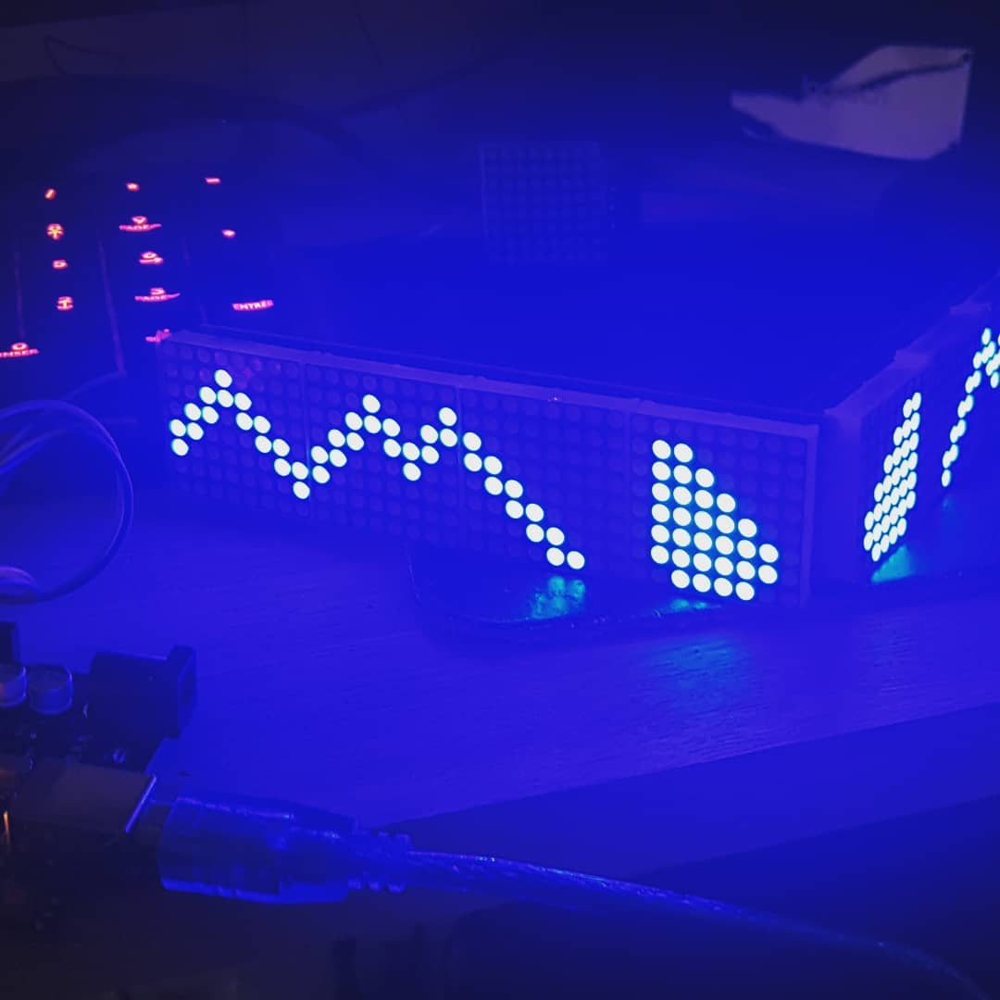

Ceci-est mon premier projet de programmation, mélant electronique
et programmation. L'objectif ici était de contrôler 8 matrices de 8x8 leds. Pour ce faire j'ai
utilisé un Arduino Uno et un module bluetooth hc-06 (que j'ai réutilisé dans mon projet de panneaux leds).
Les données à afficher étaient stockées dans un tableau à 3 dimensions sous forme de chaines binaires :
B00111100 par exemple représente une ligne de une matrice, indiquant si on doit allumer ou non
une led.

Affichage sur les leds
L'utilisation d'un tableau à plusieurs dimensions permet en réalité de gérer toutes les matrices ensemble. En premier, on va avoir la préconfiguration pour la totalité des matrices, qui elle même contient les 8 matrices, elles mêmes composées des 8 lignes. Pour changer l'affichage, le controleur peut soit afficher des animations à intervale régulier, soit attendre qu'un message soit reçu sur le module bluetooth.
Ce projet aura été assez intéréssant pour moi, il m'aura permis de developper
mon attrait pour la programmation et l'electronique, tout en apprenant à utiliser github pour la première fois.
Ce projet aura été repris par d'autres personnes. Je pense essayer de le refaire un jour ou l'autre car celui-ci
fonctionne globalement dans mon cas, mais n'est pas assez modulable pour être utilisé efficacement par d'autres
personnes. Je suis actuellement en train de travailler sur une version améliorée de ce projet, cette fois en utilisant
un esp32, 2 matrices de leds RBG en 64x32 et des PCB custom. Je vais penser mon code cette fois en prenant en compte
le fait que d'autres personnes pourraient l'utiliser, tout en offrant un code open-source.
Le code est disponible sur mon github.